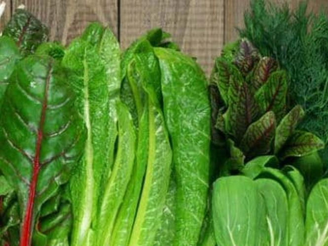
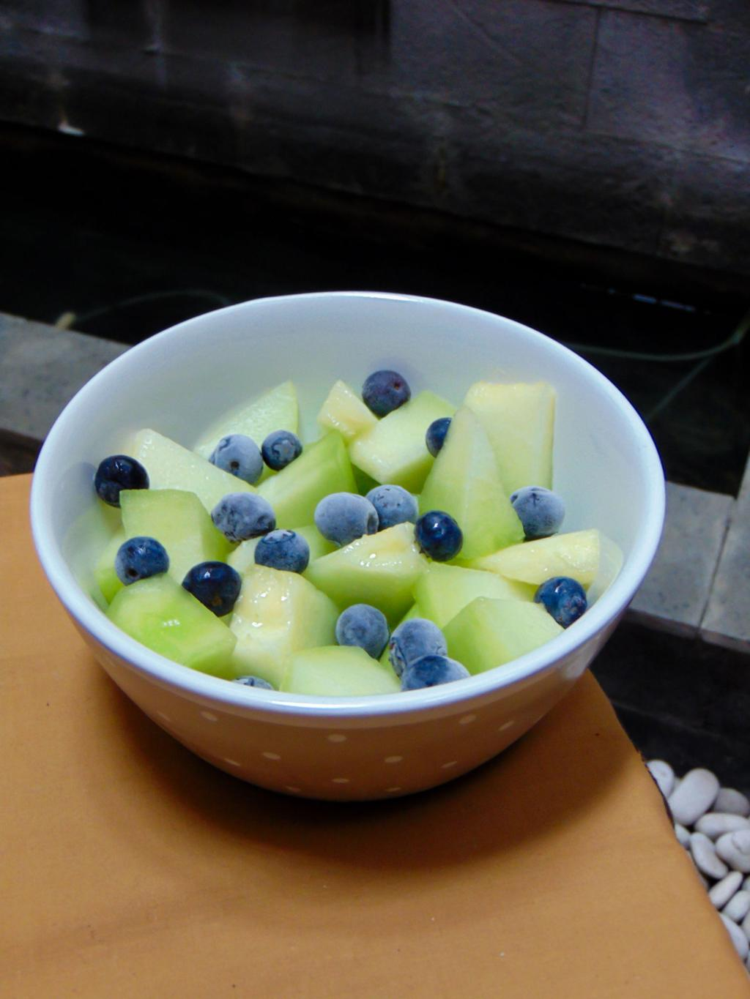

Healthy Life Nutrition
Healthy life nutrition is the practice of eating a balanced diet that provides the body with the essential nutrients needed for growth, energy, and overall well-being. It involves consuming a variety of foods, including fruits, vegetables, whole grains, lean proteins, and healthy fats, while limiting foods high in added sugars, salt, and unhealthy fats. Good nutrition helps maintain a healthy weight, strengthens the immune system, improves concentration and mood, and reduces the risk of chronic diseases such as heart disease, diabetes, and obesity. Combined with regular physical activity, proper hydration, and adequate rest, healthy nutrition forms the foundation of a strong and active lifestyle.
Featured Topics
Nutrition Basics
Learn about nutrients, food groups, and balanced diets.

Healthy Recipes
Easy breakfast, lunch, dinner, and snack recipes.

Meal Planning
Create weekly meal plans and healthy routines.
